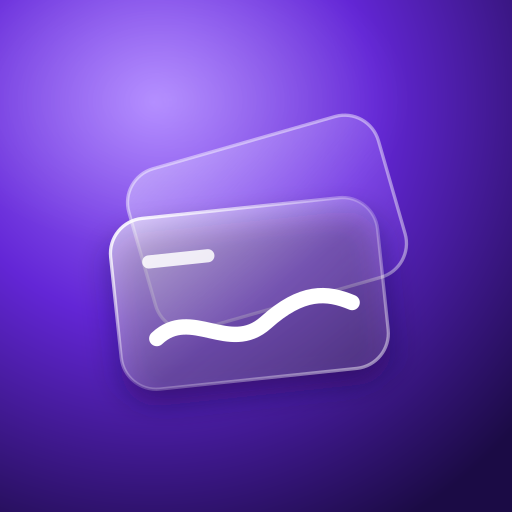

Saldo total
$ 56.410,00
Ingresos del mes
$ 58.000,00
Gastos del mes
$ 17.250,00

Flux IA · Sistema de diseño
Todo lo que aparece aquí usa los mismos tokens.css y app.css que
tendrá la app. Las cifras y nombres son de ejemplo y llevan la marca
Ejemplo; en la app, todo número saldrá de la API.
Reglas completas en frontend/DESIGN.md.
Las piezas juntas, en el marco de 390×844 con el que se verá la app en el computador. No es la pantalla de Inicio final: es para juzgar el conjunto antes de construirla.
Octubre
Hola, Ana
Saldo total
$ 56.410,00Casi negro con un tinte violeta de fondo, un violeta de marca y un lila claro para las acciones. Los contrastes están medidos en el peor caso: vidrio encima del punto más brillante del fondo.
--bg-base#0A0614 · fondo de la app--flux-orb#A274FF · tope de las esferas--flux-900#1B0B45--flux-700#4E1CB6--flux-600#6326D6 · tarjeta de saldo--flux-500#8243F5 · marca--flux-300#B795FF · enlaces, activo--flux-200#D6C5FF · botón principal--flux-50#F4EEFF--text-strong#FFFFFF · cifras, títulos--text#EDE7FB · cuerpo--text-muted#C4B9E2 · secundario--text-subtle#A99CD0 · placeholder--income#4BE3A4 · ingreso--expense#FF93A6 · gasto (ícono)--danger#FF8094 · error--warning#FFCB6B · aviso| Texto | Vidrio fuerte, peor caso | Vidrio sobre fondo | Sin desenfoque | Tarjeta de saldo, zona más clara |
|---|---|---|---|---|
--text-strong | 11,41 | 18,78 | 17,68 | 6,53 |
--text | 9,46 | 15,59 | 14,67 | no se usa |
--text-on-hero | — | — | — | 5,58 |
--text-muted | 6,18 | 10,18 | 9,59 | no se usa |
--text-subtle | 4,54 | 7,47 | 7,03 | no se usa |
--income | 6,97 | 11,47 | 10,80 | no se usa |
--expense | 5,42 | 8,92 | 8,40 | no se usa |
Peor caso: vidrio fuerte (72 %) encima del centro de una esfera (#A274FF). El vidrio normal (55 %) en ese mismo punto deja a --text-subtle (3,32) y a --expense (3,96) por debajo del mínimo, y a --text-muted justo en el límite (4,52); por eso solo lleva texto principal.
Sora para títulos: geométrica y algo ancha, con carácter. Manrope para texto y cifras: muy legible en tamaño chico y con números tabulares. Las dos van en el proyecto, sin depender de Google Fonts.
Tu dinero, en claro.
Movimientos
Gasto por categoría
El asistente responde con tus datos reales, calculados en el servidor.
Supermercado · Hoy, 09:14
Resumen de octubre
$ 56.410,00
$ 17.250,00 −$ 2.450,00
Base de 4 px. Margen lateral de pantalla: 20 px. Toda área táctil mide al menos 44×44.
--space-1--space-2--space-3--space-4--space-5--space-6--space-8--space-10--space-14Desenfoque de 22 px con saturación, base oscura translúcida, un brillo diagonal y un borde de 1 px
que se ilumina arriba a la izquierda. Sin backdrop-filter, el mismo vidrio pasa a un relleno sólido.
Vidrio normal
Solo texto principal. Deja ver el fondo con más claridad.
Vidrio fuerte
Para texto secundario, listas y formularios.
Sin desenfoque
La alternativa sólida, para navegadores sin backdrop-filter.
Normal, fuerte y sólido, sobre las mismas esferas.
Dato suelto. Si la API manda null se muestra «—» con la explicación, nunca «0 %».
Vidrio violeta, casi opaco: el blanco mantiene 6,5:1 hasta en su zona más clara. Hay una sola por pantalla. El saldo es total: la API no da saldo por cuenta, así que no se inventa uno.
Saldo total
$ 12.345.678,90Cifra larga: no se corta ni se cambia por «…»; baja un escalón de tamaño (40 → 32 → 26).
Compacta: la que queda fija arriba al bajar en Inicio.
Cuentas
Cuentas: nombre, tipo y moneda. Sin cifras, porque la API no las tiene por cuenta.
Lila claro con texto oscuro para la acción principal (11,3:1), como en la referencia. Al tocar, se encogen a 97 % en 100 ms. Pruébalos: la respuesta es CSS, inmediata.
Los botones de ícono miden 44×44 y siempre llevan aria-label.
Contorno lila de 1,5 px como en la referencia. La etiqueta siempre visible, letra de 16 px (con menos, el iPhone hace zoom al enfocar) y el error escrito debajo, no solo en rojo.
Errores: arriba el mensaje general de la API, tal cual llega; debajo de cada campo, el de fields.
El emoji y el color de la categoría vienen de la API. Como algunos son muy oscuros para este fondo («Otros» es #374151), el chip tiene base y anillo propios, y el emoji carga la identidad.
occurredAt y se muestra en la zona del usuario.Toda pantalla resuelve tres: cargando, vacío y error. El esqueleto tiene la forma de lo que viene, así nada salta cuando llegan los datos.
Cargando. El brillo se desplaza con transform; con movimiento reducido queda quieto.
Todavía no hay movimientos
Registra tu primer ingreso o gasto y aquí verás cómo se mueve tu dinero.
Vacío. Dice qué falta y ofrece la acción que lo resuelve.
No pudimos cargar tus datos
Revisa tu conexión e inténtalo de nuevo.
Error. Si la API manda un mensaje, se muestra ese; si es un fallo de red, este texto propio. Nunca el detalle técnico.
Las tres usan el mismo fondo violeta del ícono de la referencia, sin copiar su dibujo. El dibujo cabe en el círculo seguro de los íconos maskable, así que sobrevive al recorte circular de Android. Elige una; con esa genero los PNG de 192 y 512, el maskable y el apple-touch-icon.
A 60 px, el tamaño real en la pantalla de inicio, junto a íconos genéricos. Arriba A; abajo B y C.
Dibujados para el proyecto: grilla de 24, trazo de 1,75 y puntas redondeadas. Toman el color del texto. Las categorías no usan estos íconos: usan el emoji que manda la API.